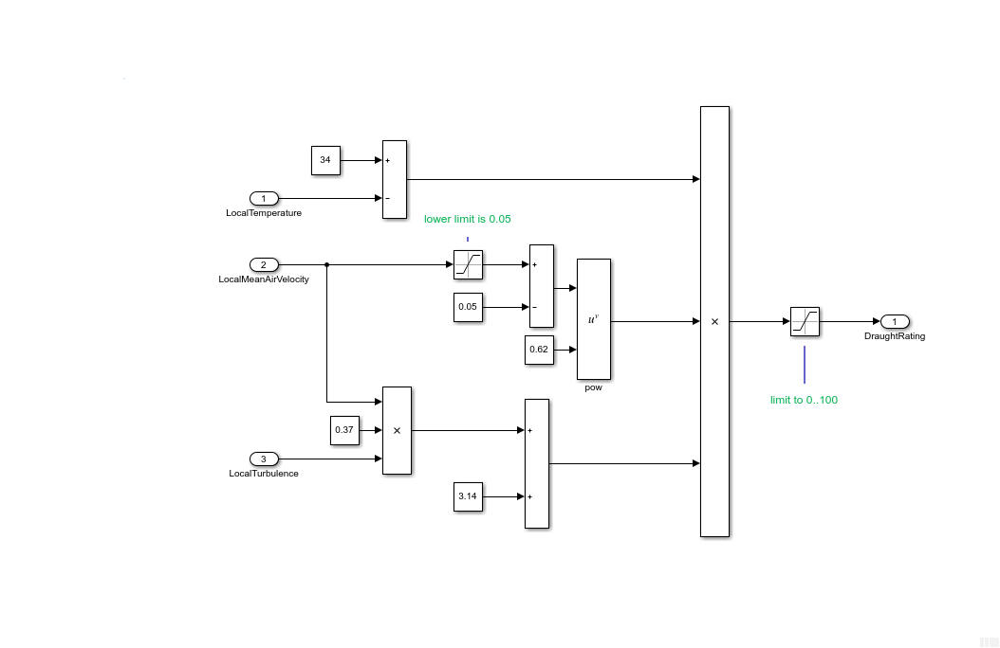
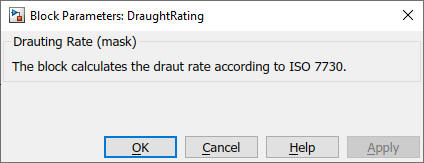

DraughtRating
Path:
CARNOT/Outputs/Comfort
Purpose:
This block calculates the draught rating according to ISO 7730.
Description:
The draught rating is the predicted percentage of people evaluating a room
climate as drought.
From ISO 7730 : The model is applicable to people with a light, mainly sedentary job and a nearly neutral thermal sensation of the whole body and predicted draught at the neck. At the level of the arms and legs, the model might overestimate the predicted draught rate. Draught impairment is lower for higher activity levels (> 1.2 met) compared to sedentary activity and for people who perceive the ambient climate as warmer rather than thermally neutral. Appendix G contains additional information on the influence of air velocity.
The draught rating in the ISO 7730 is defined by the calculation :

Input:
| LocalTemperature | : | local air temperature in °C, valid range 20 °C to 26 °C |
| LocalMeanAirVelocity | : | local mean air velocity in m/s, 0 m/s to 0.5 m/s |
| LocalTurbulence | : | local air turbulence in %, 10 % to 60 %, if inknown a value of 40 % can be used |
Output:
| DroughtRating | : | predicted percentage of people evaluating the room climate as drought |
Parameters and Dialog Box:

Examples:
Open the example explorer from the Matlab command window
ExampleBrowser
or load the examples via the CARNOT library.
Literature:
ISO 7730 : Ergonomics of the thermal environment – Analytical determination
and interpretation of thermal comfort using calculation of the PMV and PPD
indices and local thermal comfort criteria (ISO 7730:2005)
NOTE:
The room and building models of Carnot are not able to deliver the necessary
data for this block. Use the block only in combination with other data sources
e.g. detailed room models or measurements.
Characteristics:
| Direct Feedthrough | : | Yes |
| Sample Time | : | Inherited from driving block |
| Vectorized | : | No |